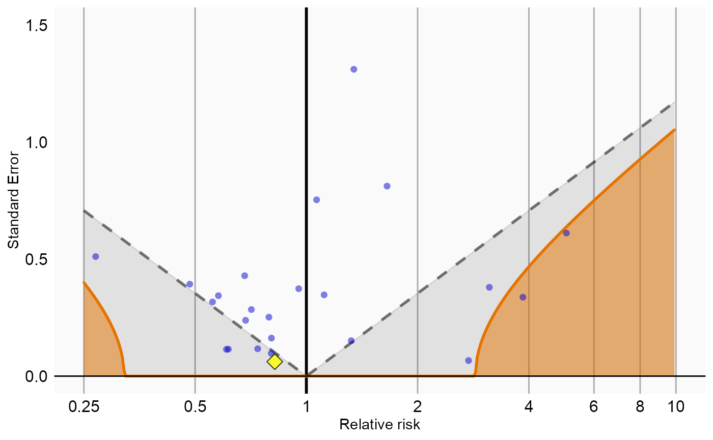
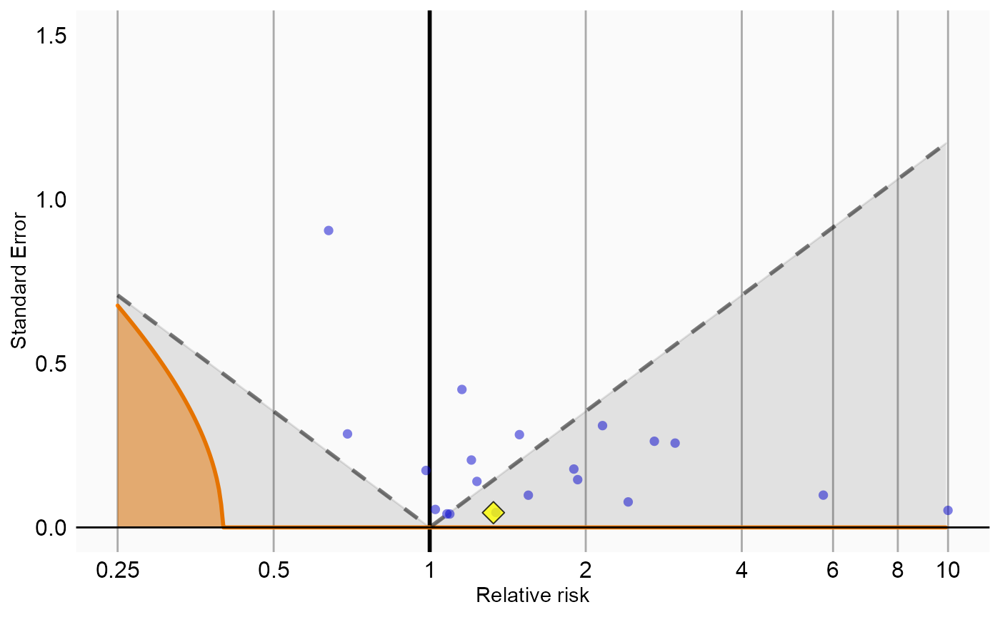

Running multiple analyses at once using the CaseControl package
Martijn J. Schuemie
2022-07-14
Source:vignettes/MultipleAnalyses.Rmd
MultipleAnalyses.RmdIntroduction
In this vignette we focus on running several different analyses on several exposure-outcome-nesting cohort triplets This can be useful when we want to explore the sensitivity to analyses choices, include controls, or run an experiment similar to the OMOP experiment to empirically identify the optimal analysis choices for a particular research question.
This vignette assumes you are already familiar with the
CaseControl package and are able to perform single studies.
We will walk through all the steps needed to perform an exemplar set of
analyses, and we have selected the well-studied topic of the effect of
nonsteroidal anti-inflammatory drugs (NSAIDs) on gastrointestinal (GI)
bleeding-related hospitalization. For simplicity, we focus on one NSAID:
diclofenac. We will execute various variations of an analysis for the
primary exposure pair and a large set of negative control exposures.
General approach
The general approach to running a set of analyses is that you specify all the function arguments of the functions you would normally call, and create sets of these function arguments. The final models as well as intermediate data objects will all be saved to disk for later extraction.
An analysis will be executed by calling these functions in sequence:
When you provide several analyses to the CaseControl
package, it will determine whether any of the analyses and
exposure-outcome-nesting triplets cohort triplets have anything in
common, and will take advantage of this fact. For example, if we specify
several exposure-outcome-nesting triplets with the same outcome and
nesting cohort, the data for the cases will be extracted only once.
The function arguments you need to define have been divided into four groups:
- Hypothesis of interest: arguments that are specific to a hypothesis of interest, in the case of the case-control design this is a combination of exposure, outcome, and optionally a cohort in which the analysis is nested.
- Analyses: arguments that are not directly specific to a hypothesis of interest, such as the washout window, number of controls per case, whether to match on age and gender, etc.
- Arguments that are the output of a previous function in the
CaseControlpackage, such as thecaseDataargument of theselectControlsfunction. These cannot be specified by the user. - Arguments that are specific to an environment, such as the connection details for connecting to the server, and the name of the schema holding the CDM data.
Preparation for the example
We need to tell R how to connect to the server where the data are.
CaseControl uses the DatabaseConnector
package, which provides the createConnectionDetails
function. Type ?createConnectionDetails for the specific
settings required for the various database management systems (DBMS).
For example, one might connect to a PostgreSQL database using this
code:
connectionDetails <- createConnectionDetails(dbms = "postgresql",
server = "localhost/ohdsi",
user = "joe",
password = "supersecret")
outputFolder <- "/home/caseControlOutput"
cdmDatabaseSchema <- "my_cdm_data"
cohortDatabaseSchema <- "my_work_schema"
cohortTable <- "vignette_cohorts"The last two lines define the cdmDatabaseSchema and
cohortDatabaseSchema variables. We’ll use these later to
tell R where the data in CDM format live, and where we want to store the
outcome and nesting cohorts. Note that for Microsoft SQL Server,
databaseschemas need to specify both the database and the schema, so for
example cdmDatabaseSchema <- "my_cdm_data.dbo".
We also need to prepare our exposures, outcomes and nesting cohorts
of interest. The drug_era table in the OMOP Common Data
Model already contains prespecified cohorts of users at the ingredient
level, so we will use that for the exposures. For the outcomes, we want
to restrict our analysis only to those events that are recorded in an
inpatient setting, so we will need to create a custom cohort table. For
this example, we are only interested in GI bleed (concept ID 192671).
Some of the analyses we’d like to nest in a population with previous
diagnoses of rheumatoid arthritis, so we will need to create a custom
cohort for this as well.
We create a text file called vignette.sql with the following content:
/***********************************
File vignette.sql
***********************************/
IF OBJECT_ID('@cohortDatabaseSchema.@cohortTable', 'U') IS NOT NULL
DROP TABLE @cohortDatabaseSchema.@cohortTable;
SELECT 1 AS cohort_definition_id,
condition_start_date AS cohort_start_date,
condition_end_date AS cohort_end_date,
condition_occurrence.person_id AS subject_id
INTO @cohortDatabaseSchema.@cohortTable
FROM @cdmDatabaseSchema.condition_occurrence
INNER JOIN @cdmDatabaseSchema.visit_occurrence
ON condition_occurrence.visit_occurrence_id = visit_occurrence.visit_occurrence_id
WHERE condition_concept_id IN (
SELECT descendant_concept_id
FROM @cdmDatabaseSchema.concept_ancestor
WHERE ancestor_concept_id = 192671 -- GI - Gastrointestinal haemorrhage
)
AND visit_occurrence.visit_concept_id IN (9201, 9203);
INSERT INTO @cohortDatabaseSchema.@cohortTable
(cohort_definition_id, cohort_start_date, cohort_end_date, subject_id)
SELECT 2 AS cohort_definition_id,
MIN(condition_start_date) AS cohort_start_date,
NULL AS cohort_end_date,
person_id AS subject_id
FROM @cdmDatabaseSchema.condition_occurrence
WHERE condition_concept_id IN (
SELECT descendant_concept_id
FROM @cdmDatabaseSchema.concept_ancestor
WHERE ancestor_concept_id = 80809 -- rheumatoid arthritis
)
GROUP BY person_id;This is parameterized SQL which can be used by the
SqlRender package. We use parameterized SQL so we do not
have to pre-specify the names of the CDM and result schemas. That way,
if we want to run the SQL on a different schema, we only need to change
the parameter values; we do not have to change the SQL code. By also
making use of translation functionality in SqlRender, we
can make sure the SQL code can be run in many different
environments.
library(SqlRender)
sql <- readSql("vignette.sql")
sql <- render(sql,
cdmDatabaseSchema = cdmDatabaseSchema,
cohortDatabaseSchema = cohortDatabaseSchema,
cohortTable = cohortTable)
sql <- translate(sql, targetDialect = connectionDetails$dbms)
connection <- connect(connectionDetails)
executeSql(connection, sql)In this code, we first read the SQL from the file into memory. In the
next line, we replace the two parameter names with the actual values. We
then translate the SQL into the dialect appropriate for the DBMS we
already specified in the connectionDetails. Next, we
connect to the server, and submit the rendered and translated SQL.
Specifying hypotheses of interest
The first group of arguments define the exposure, outcome, and optionally the nesting cohort. Here we demonstrate how to create a list of exposure-outcome-nesting cohort triplets:
negativeControls <- c(705178,
705944,
710650,
714785,
719174,
719311,
735340,
742185,
780369,
781182,
924724,
990760,
1110942,
1111706,
1136601,
1317967,
1501309,
1505346,
1551673,
1560278,
1584910,
19010309,
40163731)
diclofenac <- 1124300
giBleed <- 1
rheumatoidArthritis <- 2
exposureOutcomeNcList <- list()
for (exposureId in c(diclofenac, negativeControls)) {
exposureOutcomeNc <- createExposureOutcomeNestingCohort(exposureId = exposureId,
outcomeId = giBleed,
nestingCohortId = rheumatoidArthritis)
exposureOutcomeNcList[[length(exposureOutcomeNcList) + 1]] <- exposureOutcomeNc
}We defined the outcome of interest to be the custom cohort with ID 1 we defined in the SQL above. The exposures include diclofenac (concept ID 1124300) and a large number of negative control exposures. For each hypothesis we specify the same nesting cohort with ID 2, as defined in the SQL above.
A convenient way to save exposureOutcomeNcList to file
is by using the saveExposureOutcomeNestingCohortList
function, and we can load it again using the
loadExposureOutcomeNestingCohortList function.
Specifying analyses
The second group of arguments are not specific to a hypothesis of
interest, and comprise the majority of arguments. For each function that
will be called during the execution of the analyses, a companion
function is available that has (almost) the same arguments. For example,
for the getDbCaseData() function there is the
createGetDbCaseDataArgs() function. These companion
functions can be used to create the arguments to be used during
execution:
getDbCaseDataArgs1 <- createGetDbCaseDataArgs(useNestingCohort = FALSE,
getVisits = FALSE)
matchingCriteria1 <- createMatchingCriteria(controlsPerCase = 2,
matchOnAge = TRUE,
ageCaliper = 2,
matchOnGender = TRUE,
matchOnProvider = FALSE,
matchOnVisitDate = FALSE)
selectControlsArgs1 <- createSelectControlsArgs(firstOutcomeOnly = FALSE,
washoutPeriod = 180,
controlSelectionCriteria = matchingCriteria1)
getDbExposureDataArgs1 <- createGetDbExposureDataArgs()
createCaseControlDataArgs1 <- createCreateCaseControlDataArgs(firstExposureOnly = FALSE,
riskWindowStart = 0,
riskWindowEnd = 0)
fitCaseControlModelArgs1 <- createFitCaseControlModelArgs()Any argument that is not explicitly specified by the user will assume
the default value specified in the function. Note that in this example,
even though we specified a nesting cohort for each
exposure-outcome-nesting cohort triplet, we have specified
useNestingCohort = FALSE, meaning we will not nest this
analysis but rather use the entire population to draw cases and
controls.
We can now combine the arguments for the various functions into a single analysis:
ccAnalysis1 <- createCcAnalysis(analysisId = 1,
description = "Matching on age and gender",
getDbCaseDataArgs = getDbCaseDataArgs1,
selectControlsArgs = selectControlsArgs1,
getDbExposureDataArgs = getDbExposureDataArgs1,
createCaseControlDataArgs = createCaseControlDataArgs1,
fitCaseControlModelArgs = fitCaseControlModelArgs1)Note that we have assigned an analysis ID (1) to this set of arguments. We can use this later to link the results back to this specific set of choices. We also include a short description of the analysis.
We can easily create more analyses, for example by using nesting and matching on visit dates:
getDbCaseDataArgs2 <- createGetDbCaseDataArgs(useNestingCohort = TRUE,
getVisits = TRUE)
ccAnalysis2 <- createCcAnalysis(analysisId = 2,
description = "Matching on age and gender, nesting in indication",
getDbCaseDataArgs = getDbCaseDataArgs2,
selectControlsArgs = selectControlsArgs1,
getDbExposureDataArgs = getDbExposureDataArgs1,
createCaseControlDataArgs = createCaseControlDataArgs1,
fitCaseControlModelArgs = fitCaseControlModelArgs1)
covariateSettings <- createCovariateSettings(useCharlsonIndex = TRUE,
useChads2 = TRUE,
useDcsi = TRUE)
getDbExposureDataArgs2 <- createGetDbExposureDataArgs(covariateSettings = covariateSettings)
fitCaseControlModelArgs2 <- createFitCaseControlModelArgs(useCovariates = TRUE,
prior = createPrior("none"))
ccAnalysis3 <- createCcAnalysis(analysisId = 3,
description = "Matching on age and gender, nesting in indication, using covars",
getDbCaseDataArgs = getDbCaseDataArgs2,
selectControlsArgs = selectControlsArgs1,
getDbExposureDataArgs = getDbExposureDataArgs2,
createCaseControlDataArgs = createCaseControlDataArgs1,
fitCaseControlModelArgs = fitCaseControlModelArgs2)
matchingCriteria2 <- createMatchingCriteria(controlsPerCase = 2,
matchOnAge = TRUE,
ageCaliper = 2,
matchOnGender = TRUE,
matchOnProvider = FALSE,
matchOnVisitDate = TRUE,
visitDateCaliper = 30)
selectControlsArgs2 <- createSelectControlsArgs(firstOutcomeOnly = FALSE,
washoutPeriod = 180,
controlSelectionCriteria = matchingCriteria2)
ccAnalysis4 <- createCcAnalysis(analysisId = 4,
description = "Matching on age, gender and visit, nesting in indication, using covars",
getDbCaseDataArgs = getDbCaseDataArgs2,
selectControlsArgs = selectControlsArgs2,
getDbExposureDataArgs = getDbExposureDataArgs2,
createCaseControlDataArgs = createCaseControlDataArgs1,
fitCaseControlModelArgs = fitCaseControlModelArgs2)
samplingCriteria <- createSamplingCriteria(controlsPerCase = 2)
selectControlsArgs3 <- createSelectControlsArgs(firstOutcomeOnly = FALSE,
washoutPeriod = 180,
controlSelectionCriteria = samplingCriteria)
covariateSettings <- createCovariateSettings(useDemographicsAgeGroup = TRUE,
useDemographicsGender = TRUE)
getDbExposureDataArgs3 <- createGetDbExposureDataArgs(covariateSettings = covariateSettings)
ccAnalysis5 <- createCcAnalysis(analysisId = 5,
description = "Sampling controls, adjusting for age and gender",
getDbCaseDataArgs = getDbCaseDataArgs1,
selectControlsArgs = selectControlsArgs3,
getDbExposureDataArgs = getDbExposureDataArgs3,
createCaseControlDataArgs = createCaseControlDataArgs1,
fitCaseControlModelArgs = fitCaseControlModelArgs2)
ccAnalysis6 <- createCcAnalysis(analysisId = 6,
description = "Sampling controls, adjusting for age and gender, nesting in indication",
getDbCaseDataArgs = getDbCaseDataArgs2,
selectControlsArgs = selectControlsArgs3,
getDbExposureDataArgs = getDbExposureDataArgs3,
createCaseControlDataArgs = createCaseControlDataArgs1,
fitCaseControlModelArgs = fitCaseControlModelArgs2)These analyses can be combined in a list:
ccAnalysisList <- list(ccAnalysis1, ccAnalysis2, ccAnalysis3, ccAnalysis4, ccAnalysis5, ccAnalysis6)A convenient way to save ccAnalysisList to file is by
using the saveCcAnalysisList function, and we can load it
again using the loadCcAnalysisList function.
Exposure, outcome, and nesting cohort selection strategies
Often we would like to evaluate different definitions of the exposure and/or outcome, or we want to consider different strategies for identifying the nesting cohort. We could include these by created extra exposure-outcome-nesting cohort triplets, but that would mean that all defined analyses would be executed against these variations of the definitions, and this may not be what we want. Perhaps we would like to define just a single sensitivity analyses with a different outcome definition, in which case we could argue that the strategy of selecting the outcome becomes part of the analysis.
In such a case, we can define the multiple strategies using a list:
outcomeIds = list(narrowDefinition = 1,
broadDefinition = 11)
exposureOutcomeNc <- createExposureOutcomeNestingCohort(exposureId = 1124300,
outcomeId = outcomeIds,
nestingCohortId = 2)When we specify an analysis, we can then refer to one definition or the other:
ccAnalysis1A <- createCcAnalysis(analysisId = 1,
description = "Matching on age and gender, using narrow def.",
outcomeType = "narrowDefinition",
getDbCaseDataArgs = getDbCaseDataArgs1,
selectControlsArgs = selectControlsArgs1,
getDbExposureDataArgs = getDbExposureDataArgs1,
createCaseControlDataArgs = createCaseControlDataArgs1,
fitCaseControlModelArgs = fitCaseControlModelArgs1)
ccAnalysis1B <- createCcAnalysis(analysisId = 2,
description = "Matching on age and gender, using broad def.",
outcomeType = "broadDefinition",
getDbCaseDataArgs = getDbCaseDataArgs1,
selectControlsArgs = selectControlsArgs1,
getDbExposureDataArgs = getDbExposureDataArgs1,
createCaseControlDataArgs = createCaseControlDataArgs1,
fitCaseControlModelArgs = fitCaseControlModelArgs1)
ccAnalysisList2 <- list(ccAnalysis1A, ccAnalysis1B)In this example, the first analysis (analysisId = 1) will use cohort definition 1 as outcome, whilst the second analysis analysis (analysisId = 2) will use cohort definition 11 as outcome.
The same mechanism can be used to specify types for the exposureId and nestingCohortId.
Executing multiple analyses
We can now run the analyses against the hypotheses of interest using
the runCcAnalyses()function. This function will run all
specified analyses against all hypotheses of interest, meaning that the
total number of outcome models is
length(ccAnalysisList) * length(exposureOutcomeNcList).
result <- runCcAnalyses(connectionDetails = connectionDetails,
cdmDatabaseSchema = cdmDatabaseSchema,
oracleTempSchema = cdmDatabaseSchema,
exposureDatabaseSchema = cdmDatabaseSchema,
exposureTable = "drug_era",
outcomeDatabaseSchema = cohortDatabaseSchema,
outcomeTable = cohortTable,
nestingCohortDatabaseSchema = cohortDatabaseSchema,
nestingCohortTable = cohortTable,
outputFolder = outputFolder,
exposureOutcomeNestingCohortList = exposureOutcomeNcList,
ccAnalysisList = ccAnalysisList,
getDbCaseDataThreads = 1,
selectControlsThreads = 2,
getDbExposureDataThreads = 3,
createCaseControlDataThreads = 5,
fitCaseControlModelThreads = 5,
cvThreads = 3)In the code above, we provide the arguments for connecting to the
database, which schemas and tables to use, as well as the analyses and
hypotheses of interest. The outputFolder specifies where
the outcome models and intermediate files will be written. We also
instruct CaseControl to use multiple threads for various
stages in the analyses, meaning these will be executed in parallel on
multiple CPUs in the computer. Multithreading can significantly reduce
execution time, but will require more system resources such as memory
and temporary disk space.
Restarting
If for some reason the execution was interrupted, you can restart by
re-issuing the runCcAnalyses() command. Any intermediate
and final products that have already been completed and written to disk
will be skipped.
Retrieving the results
The result of the runCcAnalyses() is a data frame with
one row per exposure-outcome-nesting cohort-analysis combination. It
provides the file names of the intermediate and end-result files that
were constructed. For example, we can retrieve the fitted model for the
combination of our drug of interest, outcome, and first analysis:
ccModelFile <- result$modelFile[result$exposureId == 1124300 &
result$outcomeId == 1 &
result$analysisId == 1]
ccModel <- readRDS(file.path(outputFolder, ccModelFile))
ccModel#> Case-Control fitted model
#> Status: OK
#>
#> Counts
#> Cases Controls Exposed cases Exposed controls
#> Count 93903 182623 580 871
#>
#> Estimate lower .95 upper .95 logRr seLogRr Log Likelihood Ratio
#> treatment 1.29688 1.16676 1.44046 0.25996 0.05376 11.47Note that some of the file names will appear several times in the table. For example, all analysis share the same ccData object.
We can create a summary of the results using
summarizeCcAnalyses():
analysisSum <- summarizeCcAnalyses(result, outputFolder)
head(analysisSum)#> analysisId exposureId nestingCohortId outcomeId rr ci95lb ci95ub
#> 1 1 1124300 2 1 1.2968817 1.1667583 1.440461
#> 2 1 705178 2 1 1.2495695 0.9655508 1.609490
#> 3 1 705944 2 1 1.2452252 1.0702936 1.446373
#> 4 1 710650 2 1 0.8839713 0.5419904 1.401811
#> 5 1 714785 2 1 1.2449900 1.1093374 1.395879
#> 6 1 719174 2 1 1.3320666 1.2113000 1.464070
#> p cases controls exposedCases exposedControls logRr
#> 1 1.327163e-06 93903 182623 580 871 0.2599627
#> 2 8.741421e-02 93903 182623 97 151 0.2227991
#> 3 4.304137e-03 93903 182623 279 436 0.2193164
#> 4 6.109298e-01 93903 182623 25 55 -0.1233307
#> 5 1.851163e-04 93903 182623 479 749 0.2191275
#> 6 3.021948e-09 93903 182623 726 1062 0.2867316
#> seLogRr llr
#> 1 0.05375969 11.4701701
#> 2 0.13035295 1.4383537
#> 3 0.07681926 4.0086266
#> 4 0.24242068 0.1326407
#> 5 0.05861363 6.8588850
#> 6 0.04834944 17.2408208This tells us, per exposure-outcome-nesting cohort-analysis combination, the estimated relative risk and 95% confidence interval, as well as the number of cases, controls, and number of those that were exposed to the drug.
Empirical calibration
Now that we have produced estimates for all outcomes including our negative controls, we can perform empirical calibration to estimate the bias of the various analyses included in our study. We will create the calibration effect plots for every analysis ID. In each plot, the blue dots represent our negative control exposures, and the yellow diamond represents our exposure of interest: diclofenac. An unbiased, well-calibrated analysis should have 95% of the negative controls between the dashed lines (ie. 95% should have p > .05).
library(EmpiricalCalibration)
# Analysis 1: Simplest model
negCons <- analysisSum[analysisSum$analysisId == 1 & analysisSum$exposureId != 1124300, ]
ei <- analysisSum[analysisSum$analysisId == 1 & analysisSum$exposureId == 1124300, ]
null <- fitNull(negCons$logRr, negCons$seLogRr)
plotCalibrationEffect(logRrNegatives = negCons$logRr,
seLogRrNegatives = negCons$seLogRr,
logRrPositives = ei$logRr,
seLogRrPositives = ei$seLogRr,
null)#> Warning in checkWithinLimits(log(xLimits), c(logRrNegatives, logRrPositives), :
#> Values are outside plotted range. Consider adjusting xLimits parameter#> Warning: Removed 1 rows containing missing values (geom_vline).#> Warning: Removed 2 rows containing missing values (geom_point).
# Analysis 2: Nesting in rheumatoid arthritis
negCons <- analysisSum[analysisSum$analysisId == 2 & analysisSum$exposureId != 1124300, ]
ei <- analysisSum[analysisSum$analysisId == 2 & analysisSum$exposureId == 1124300, ]
null <- fitNull(negCons$logRr, negCons$seLogRr)
plotCalibrationEffect(logRrNegatives = negCons$logRr,
seLogRrNegatives = negCons$seLogRr,
logRrPositives = ei$logRr,
seLogRrPositives = ei$seLogRr,
null)#> Warning in checkWithinLimits(log(xLimits), c(logRrNegatives, logRrPositives), :
#> Values are outside plotted range. Consider adjusting xLimits parameter#> Warning: Removed 1 rows containing missing values (geom_vline).#> Warning: Removed 1 rows containing missing values (geom_point).
# Analysis 3: Nesting and including covariates
negCons <- analysisSum[analysisSum$analysisId == 3 & analysisSum$exposureId != 1124300, ]
ei <- analysisSum[analysisSum$analysisId == 3 & analysisSum$exposureId == 1124300, ]
null <- fitNull(negCons$logRr, negCons$seLogRr)
plotCalibrationEffect(logRrNegatives = negCons$logRr,
seLogRrNegatives = negCons$seLogRr,
logRrPositives = ei$logRr,
seLogRrPositives = ei$seLogRr,
null)#> Warning in checkWithinLimits(log(xLimits), c(logRrNegatives, logRrPositives), :
#> Values are outside plotted range. Consider adjusting xLimits parameter#> Warning: Removed 1 rows containing missing values (geom_vline).#> Warning: Removed 2 rows containing missing values (geom_point).
# Analysis 4: Nesting, including covariates, and matching on visit
negCons <- analysisSum[analysisSum$analysisId == 4 & analysisSum$exposureId != 1124300, ]
ei <- analysisSum[analysisSum$analysisId == 4 & analysisSum$exposureId == 1124300, ]
null <- fitNull(negCons$logRr, negCons$seLogRr)
plotCalibrationEffect(logRrNegatives = negCons$logRr,
seLogRrNegatives = negCons$seLogRr,
logRrPositives = ei$logRr,
seLogRrPositives = ei$seLogRr,
null)#> Warning: Removed 1 rows containing missing values (geom_vline).
# Analysis 5: Sampling controls, adjusting for age and gender
negCons <- analysisSum[analysisSum$analysisId == 5 & analysisSum$exposureId != 1124300, ]
ei <- analysisSum[analysisSum$analysisId == 5 & analysisSum$exposureId == 1124300, ]
null <- fitNull(negCons$logRr, negCons$seLogRr)
plotCalibrationEffect(logRrNegatives = negCons$logRr,
seLogRrNegatives = negCons$seLogRr,
logRrPositives = ei$logRr,
seLogRrPositives = ei$seLogRr,
null)#> Warning in checkWithinLimits(yLimits, c(seLogRrNegatives, seLogRrPositives), :
#> Values are outside plotted range. Consider adjusting yLimits parameter#> Warning in checkWithinLimits(log(xLimits), c(logRrNegatives, logRrPositives), :
#> Values are outside plotted range. Consider adjusting xLimits parameter#> Warning: Removed 1 rows containing missing values (geom_vline).#> Warning: Removed 3 rows containing missing values (geom_point).
# Analysis 6: Sampling controls, adjusting for age and gender, nesting in indication
negCons <- analysisSum[analysisSum$analysisId == 6 & analysisSum$exposureId != 1124300, ]
ei <- analysisSum[analysisSum$analysisId == 6 & analysisSum$exposureId == 1124300, ]
null <- fitNull(negCons$logRr, negCons$seLogRr)
plotCalibrationEffect(logRrNegatives = negCons$logRr,
seLogRrNegatives = negCons$seLogRr,
logRrPositives = ei$logRr,
seLogRrPositives = ei$seLogRr,
null)#> Warning in fitNull(negCons$logRr, negCons$seLogRr): Estimate(s) with NA standard
#> error detected. Removing before fitting null distribution#> Warning: Removed 1 rows containing missing values (geom_vline).#> Warning: Removed 1 rows containing missing values (geom_point).
Acknowledgments
Considerable work has been dedicated to provide the
CaseControl package.
citation("CaseControl")#>
#> To cite package 'CaseControl' in publications use:
#>
#> Schuemie M (2022). _CaseControl: Case-Control_.
#> http://ohdsi.github.io/CaseControl,
#> https://github.com/OHDSI/CaseControl.
#>
#> A BibTeX entry for LaTeX users is
#>
#> @Manual{,
#> title = {CaseControl: Case-Control},
#> author = {Martijn Schuemie},
#> year = {2022},
#> note = {http://ohdsi.github.io/CaseControl,
#> https://github.com/OHDSI/CaseControl},
#> }Further, CaseControl makes extensive use of the
Cyclops package.
citation("Cyclops")#>
#> To cite Cyclops in publications use:
#>
#> Suchard MA, Simpson SE, Zorych I, Ryan P, Madigan D (2013). "Massive
#> parallelization of serial inference algorithms for complex
#> generalized linear models." _ACM Transactions on Modeling and
#> Computer Simulation_, *23*, 10.
#> <https://dl.acm.org/doi/10.1145/2414416.2414791>.
#>
#> A BibTeX entry for LaTeX users is
#>
#> @Article{,
#> author = {M. A. Suchard and S. E. Simpson and I. Zorych and P. Ryan and D. Madigan},
#> title = {Massive parallelization of serial inference algorithms for complex generalized linear models},
#> journal = {ACM Transactions on Modeling and Computer Simulation},
#> volume = {23},
#> pages = {10},
#> year = {2013},
#> url = {https://dl.acm.org/doi/10.1145/2414416.2414791},
#> }This work is supported in part through the National Science Foundation grant IIS 1251151.